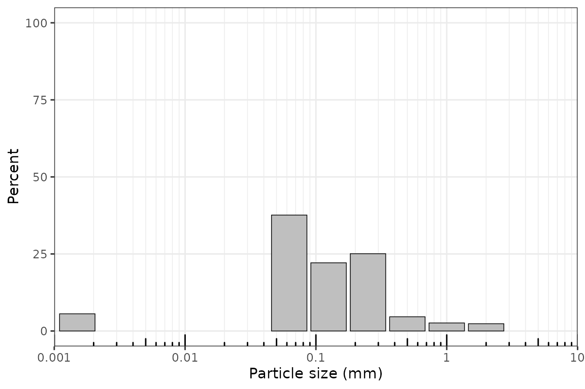
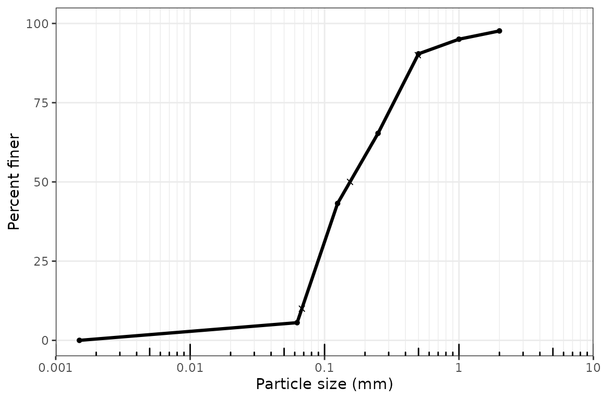
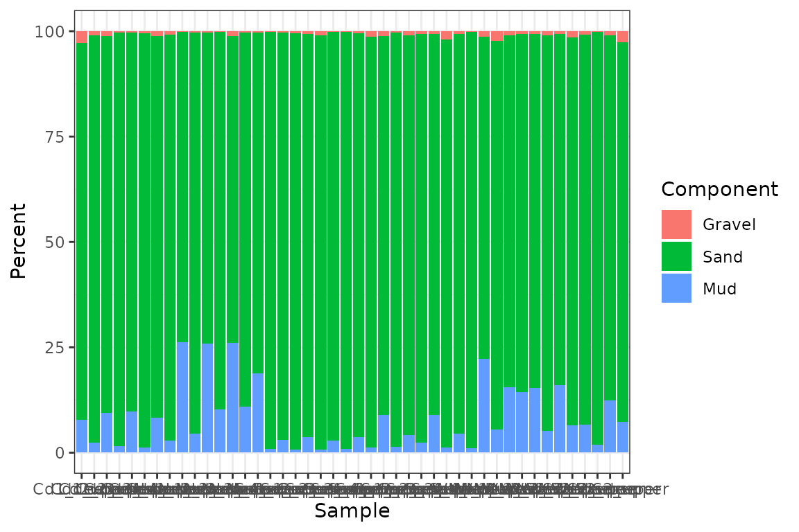
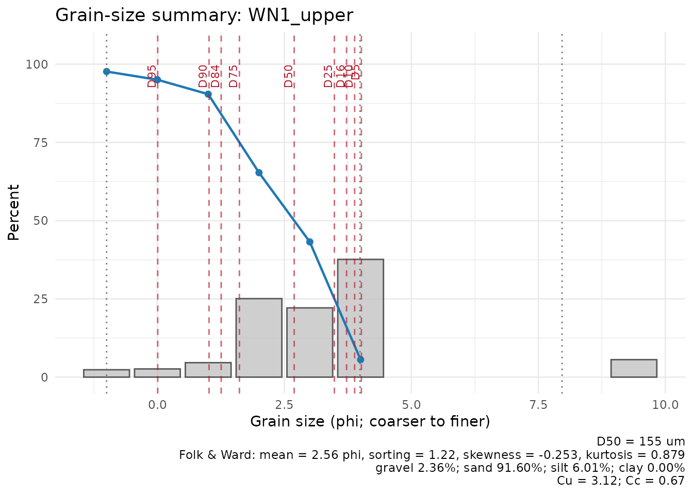

Introduction
This vignette shows a complete sediment grain-size workflow with
grainsizeR. The examples use package data stored in
inst/extdata.
For a more detailed discussion of table layouts versus measurement workflows, including the dry-sieve and sieve + hydrometer example files, see the table layouts and measurement workflows vignette.
Reading Long-Format Data
Long-format input has one row per sample and grain-size class.
long_file <- system.file("extdata", "grain.long.csv", package = "grainsizeR")
gs <- read_gsd(
long_file,
format = "long",
sample_col = "sample",
size_col = "size",
value_col = "proportion",
size_unit = "mm",
value_type = "proportion"
)
head(gs)
#> # A tibble: 6 × 13
#> sample_id bin_id raw_size_um size_lower_um size_upper_um size_mid_um
#> <chr> <int> <dbl> <dbl> <dbl> <dbl>
#> 1 Cd1_deeper 1 2000 2000 NA NA
#> 2 Cd1_deeper 2 1000 1000 2000 1414.
#> 3 Cd1_deeper 3 500 500 1000 707.
#> 4 Cd1_deeper 4 250 250 500 354.
#> 5 Cd1_deeper 5 125 125 250 177.
#> 6 Cd1_deeper 6 62.5 62.5 125 88.4
#> # ℹ 7 more variables: size_mid_phi <dbl>, retained_percent <dbl>,
#> # cum_finer_percent <dbl>, cum_coarser_percent <dbl>, is_open_lower <lgl>,
#> # is_open_upper <lgl>, measurement_method <chr>Reading Wide-Format Data
Wide input stores size classes in rows and samples in columns.
Terminal fine rows such as <0.0625 are supported and
become open-ended fine classes. G2Sd-style wide tables often store
particle sizes in row names and samples in columns. Convert row names to
a size column and use size_unit = "auto" or
size_unit = "um" when importing micrometre-scale
labels.
wide_file <- system.file("extdata", "grain.wide.csv", package = "grainsizeR")
gs_wide <- read_gsd(
wide_file,
format = "wide",
size_col = 1,
size_unit = "mm",
value_type = "percent"
)
#> New names:
#> • `` -> `...1`
head(gs_wide)
#> # A tibble: 6 × 13
#> sample_id bin_id raw_size_um size_lower_um size_upper_um size_mid_um
#> <chr> <int> <dbl> <dbl> <dbl> <dbl>
#> 1 Cd1_deeper 1 2000 2000 NA NA
#> 2 Cd1_deeper 2 1000 1000 2000 1414.
#> 3 Cd1_deeper 3 500 500 1000 707.
#> 4 Cd1_deeper 4 250 250 500 354.
#> 5 Cd1_deeper 5 125 125 250 177.
#> 6 Cd1_deeper 6 62.5 62.5 125 88.4
#> # ℹ 7 more variables: size_mid_phi <dbl>, retained_percent <dbl>,
#> # cum_finer_percent <dbl>, cum_coarser_percent <dbl>, is_open_lower <lgl>,
#> # is_open_upper <lgl>, measurement_method <chr>The gsd_tbl Object
gsd_tbl stores retained percentages, finite class
boundaries, cumulative percent finer and coarser values, and open-ended
class flags.
is_gsd_tbl(gs)
#> [1] TRUE
validate_gsd_tbl(gs)Data Quality Diagnostics
gs_diagnostics() is useful after reading data and before
calculating summary tables. It reports retained-total checks, open-ended
tails, unresolved D-values, threshold interpolation limits, and
fraction-scheme resolvability. The example wide file is a dry-sieve
dataset stored in a wide layout, so fine clay/silt thresholds may be
unresolved unless finer measurements or explicit extrapolation are
supplied.
head(gs_diagnostics(gs_wide, output = "summary"))
#> # A tibble: 6 × 8
#> sample_id n_ok n_warning n_error n_info has_error has_warning overall_status
#> <chr> <int> <int> <int> <int> <lgl> <lgl> <chr>
#> 1 Cd1_deeper 23 6 0 2 FALSE TRUE warning
#> 2 Cd1_upper 24 5 0 2 FALSE TRUE warning
#> 3 Cd2_deeper 23 6 0 2 FALSE TRUE warning
#> 4 Cd2_upper 24 5 0 2 FALSE TRUE warning
#> 5 Cd3_deeper 23 6 0 2 FALSE TRUE warning
#> 6 Cd3_upper 24 5 0 2 FALSE TRUE warning
head(gs_diagnostics(
gs,
d_values = c(5, 10, 50, 90, 95),
fraction_schemes = c("wentworth_major", "usda_tt", "uk_ssew")
))
#> # A tibble: 6 × 9
#> sample_id check status severity value expected parameter message
#> <chr> <chr> <chr> <chr> <chr> <chr> <chr> <chr>
#> 1 Cd1_deeper missing_values ok none 0 finite … NA Retain…
#> 2 Cd1_deeper negative_values ok none 0 no nega… NA No neg…
#> 3 Cd1_deeper zero_total ok none 100 > 0 NA The re…
#> 4 Cd1_deeper retained_total ok none 100 100 +/-… NA Retain…
#> 5 Cd1_deeper duplicate_size_cl… ok none 0 0 dupli… NA No dup…
#> 6 Cd1_deeper size_order ok none decr… coarse-… NA Size c…
#> # ℹ 1 more variable: recommendation <chr>Cumulative Curves and D-Values
D_p is the grain size at which p percent of
the sample is finer.
head(gs_cumulative(gs))
#> # A tibble: 6 × 7
#> sample_id boundary_id boundary_um boundary_mm boundary_phi percent_finer
#> <chr> <int> <dbl> <dbl> <dbl> <dbl>
#> 1 Cd1_deeper 1 2000 2 -1 97.2
#> 2 Cd1_deeper 2 1000 1 0 94.5
#> 3 Cd1_deeper 3 500 0.5 1 89.8
#> 4 Cd1_deeper 4 250 0.25 2 73.7
#> 5 Cd1_deeper 5 125 0.125 3 51.2
#> 6 Cd1_deeper 6 62.5 0.0625 4 7.87
#> # ℹ 1 more variable: percent_coarser <dbl>
head(gs_d_values(gs, probs = c(10, 50, 90)))
#> # A tibble: 6 × 7
#> sample_id percentile grain_size_um grain_size_mm grain_size_phi
#> <chr> <dbl> <dbl> <dbl> <dbl>
#> 1 Cd1_deeper 10 64.7 0.0647 3.95
#> 2 Cd1_deeper 50 123. 0.123 3.03
#> 3 Cd1_deeper 90 511. 0.511 0.967
#> 4 Cd1_upper 10 75.2 0.0752 3.73
#> 5 Cd1_upper 50 175. 0.175 2.51
#> 6 Cd1_upper 90 432. 0.432 1.21
#> # ℹ 2 more variables: interpolation_scale <chr>, extrapolated <lgl>Arbitrary Threshold Interpolation
gs_percent_finer() estimates percent finer at arbitrary
thresholds, including thresholds that were not measured exactly, as long
as the threshold is bracketed by finite class boundaries. Terminal
open-ended classes require explicit extrapolation or unresolved-value
handling.
head(suppressWarnings(gs_percent_finer(
gs,
sizes = c(2, 20, 50, 60, 63),
size_unit = "um",
extrapolate = "warn_linear"
)))
#> # A tibble: 6 × 8
#> sample_id threshold_um threshold_mm threshold_phi percent_finer
#> <chr> <dbl> <dbl> <dbl> <dbl>
#> 1 Cd1_deeper 2 0.002 8.97 -207.
#> 2 Cd1_deeper 20 0.02 5.64 -63.4
#> 3 Cd1_deeper 50 0.05 4.32 -6.09
#> 4 Cd1_deeper 60 0.06 4.06 5.32
#> 5 Cd1_deeper 63 0.063 3.99 8.37
#> 6 Cd1_upper 2 0.002 8.97 -140.
#> # ℹ 3 more variables: percent_coarser <dbl>, interpolation_scale <chr>,
#> # extrapolated <lgl>Grain-Size Indices
head(suppressWarnings(gs_grain_size_indices(
gs,
extrapolate = "warn_linear"
)))
#> # A tibble: 6 × 15
#> sample_id D10_um D25_um D30_um D50_um D60_um D75_um Cu Cc So_trask
#> <chr> <dbl> <dbl> <dbl> <dbl> <dbl> <dbl> <dbl> <dbl> <dbl>
#> 1 Cd1_deeper 64.7 82.2 89.0 123. 164. 264. 2.53 0.748 1.79
#> 2 Cd1_upper 75.2 108. 122. 175. 209. 286. 2.78 0.949 1.63
#> 3 Cd2_deeper 63.0 78.1 83.9 112. 134. 215. 2.13 0.834 1.66
#> 4 Cd2_upper 81.6 130. 148. 251. 289. 358. 3.54 0.932 1.66
#> 5 Cd3_deeper 62.7 76.5 81.8 107. 122. 210. 1.94 0.876 1.66
#> 6 Cd3_upper 86.2 142. 161. 261. 298. 365. 3.46 1.01 1.60
#> # ℹ 5 more variables: Sk_trask <dbl>, fine_content_percent <dbl>,
#> # fine_threshold_um <dbl>, fine_equivalent <dbl>, interpolation_scale <chr>Folk and Ward Statistics
head(suppressWarnings(gs_folk_ward(
gs,
extrapolate = "warn_linear"
)))
#> # A tibble: 6 × 26
#> sample_id D5_um D16_um D25_um D50_um D75_um D84_um D95_um D5_phi D16_phi
#> <chr> <dbl> <dbl> <dbl> <dbl> <dbl> <dbl> <dbl> <dbl> <dbl>
#> 1 Cd1_deeper 59.7 71.2 82.2 123. 264. 389. 1133. 4.07 3.81
#> 2 Cd1_upper 66.6 87.0 108. 175. 286. 366. 496. 3.91 3.52
#> 3 Cd2_deeper 58.7 68.7 78.1 112. 215. 298. 472. 4.09 3.86
#> 4 Cd2_upper 69.6 98.6 130. 251. 358. 408. 477. 3.84 3.34
#> 5 Cd3_deeper 58.7 67.9 76.5 107. 210. 296. 445. 4.09 3.88
#> 6 Cd3_upper 71.8 107. 142. 261. 365. 412. 478. 3.80 3.22
#> # ℹ 16 more variables: D25_phi <dbl>, D50_phi <dbl>, D75_phi <dbl>,
#> # D84_phi <dbl>, D95_phi <dbl>, mean_fw_phi <dbl>, mean_fw_um <dbl>,
#> # sorting_fw_phi <dbl>, skewness_fw <dbl>, kurtosis_fw <dbl>,
#> # interpolation_scale <chr>, any_extrapolated <lgl>, mean_size_class <chr>,
#> # sorting_class <chr>, skewness_class <chr>, kurtosis_class <chr>Moment Statistics and Open-Ended Classes
Moment statistics require an explicit open-end policy.
open_end = "extend_phi" estimates open-ended midpoints by
extending adjacent intervals in phi space.
head(suppressWarnings(gs_moments(
gs,
open_end = "extend_phi"
)))
#> # A tibble: 6 × 14
#> sample_id moment_method mean_moment mean_moment_unit mean_moment_um
#> <chr> <chr> <dbl> <chr> <dbl>
#> 1 Cd1_deeper logarithmic_phi 2.64 phi 160.
#> 2 Cd1_upper logarithmic_phi 2.45 phi 183.
#> 3 Cd2_deeper logarithmic_phi 2.91 phi 133.
#> 4 Cd2_upper logarithmic_phi 2.22 phi 214.
#> 5 Cd3_deeper logarithmic_phi 2.98 phi 127.
#> 6 Cd3_upper logarithmic_phi 2.15 phi 225.
#> # ℹ 9 more variables: mean_moment_phi <dbl>, sd_moment <dbl>,
#> # sd_moment_unit <chr>, skewness_moment <dbl>, kurtosis_moment <dbl>,
#> # retained_percent_used <dbl>, open_end <chr>, open_end_estimated <lgl>,
#> # open_end_omitted <lgl>Grain-Size Fractions and Particle-Size Systems
head(gs_fractions_wide(gs, scheme = "wentworth_major"))
#> # A tibble: 6 × 4
#> sample_id gravel_percent sand_percent mud_percent
#> <chr> <dbl> <dbl> <dbl>
#> 1 Cd1_deeper 2.76 89.4 7.87
#> 2 Cd1_upper 1.05 96.6 2.37
#> 3 Cd2_deeper 1.09 89.5 9.42
#> 4 Cd2_upper 0.359 98.1 1.57
#> 5 Cd3_deeper 0.365 89.9 9.75
#> 6 Cd3_upper 0.411 98.4 1.22
particle_size_systems()
#> # A tibble: 9 × 15
#> system_id system_name country_or_region domain clay_upper_um silt_upper_um
#> <chr> <chr> <chr> <chr> <dbl> <dbl>
#> 1 wentworth_ma… Wentworth … International sedim… NA NA
#> 2 gradistat GRADISTAT … International sedim… 4 63
#> 3 usda_tt USDA textu… United States soil … 2 50
#> 4 isss Internatio… International soil … 2 20
#> 5 uk_ssew UK SSEW pa… United Kingdom soil … 2 60
#> 6 hypres HYPRES par… Europe soil … 2 50
#> 7 germany_63 Germany 63… Germany soil … 2 63
#> 8 australia_20 Australia … Australia soil … 2 20
#> 9 sweden_60 Sweden 60 … Sweden soil … 2 60
#> # ℹ 9 more variables: sand_upper_um <dbl>, gravel_lower_um <dbl>,
#> # clay_range <chr>, silt_range <chr>, sand_range <chr>, gravel_range <chr>,
#> # source_status <chr>, source_reference <chr>, notes <chr>Creating a Report Table
gs_parameters() is the recommended way to create a
compact grain-size summary table for reporting. It can combine D-values,
grain-size indices, Folk and Ward statistics, moment statistics, and
fractions in one row per sample.
report_table <- suppressWarnings(gs_parameters(
gs,
parameters = c("d_values", "indices", "folk_ward", "fractions"),
fraction_scheme = "gradistat",
extrapolate = "warn_linear"
))
head(report_table)
#> # A tibble: 6 × 41
#> sample_id D5_um D10_um D16_um D25_um D50_um D75_um D84_um D90_um D95_um D30_um
#> <chr> <dbl> <dbl> <dbl> <dbl> <dbl> <dbl> <dbl> <dbl> <dbl> <dbl>
#> 1 Cd1_deep… 59.7 64.7 71.2 82.2 123. 264. 389. 511. 1133. 89.0
#> 2 Cd1_upper 66.6 75.2 87.0 108. 175. 286. 366. 432. 496. 122.
#> 3 Cd2_deep… 58.7 63.0 68.7 78.1 112. 215. 298. 383. 472. 83.9
#> 4 Cd2_upper 69.6 81.6 98.6 130. 251. 358. 408. 444. 477. 148.
#> 5 Cd3_deep… 58.7 62.7 67.9 76.5 107. 210. 296. 370. 445. 81.8
#> 6 Cd3_upper 71.8 86.2 107. 142. 261. 365. 412. 447. 478. 161.
#> # ℹ 30 more variables: D60_um <dbl>, Cu <dbl>, Cc <dbl>, So_trask <dbl>,
#> # Sk_trask <dbl>, fine_content_percent <dbl>, fine_threshold_um <dbl>,
#> # fine_equivalent <dbl>, interpolation_scale <chr>, D5_phi <dbl>,
#> # D16_phi <dbl>, D25_phi <dbl>, D50_phi <dbl>, D75_phi <dbl>, D84_phi <dbl>,
#> # D95_phi <dbl>, mean_fw_phi <dbl>, mean_fw_um <dbl>, sorting_fw_phi <dbl>,
#> # skewness_fw <dbl>, kurtosis_fw <dbl>, any_extrapolated <lgl>,
#> # mean_size_class <chr>, sorting_class <chr>, skewness_class <chr>, …plot_gradistat_summary() is for visual diagnostics.
Standard R functions can export tables when needed:
write.csv(report_table, "grain_size_summary.csv", row.names = FALSE)Keeping export in standard R workflows avoids tying grainsizeR to a specific report format.
Basic Plots
plot_distribution(gs, sample_id = "WN1_upper")
plot_cumulative(gs, sample_id = "WN1_upper", show_percentiles = c(10, 50, 90), extrapolate = "warn_linear")
plot_fractions(gs, scheme = "wentworth_major")
plot_gradistat_summary() provides a single-sample
diagnostic plot that combines retained distribution, cumulative percent
finer, D-value markers, and summary statistics. It is inspired by common
sediment grain-size reporting needs, not copied from GRADISTAT
software.
suppressWarnings(plot_gradistat_summary(
gs,
sample_id = "WN1_upper",
extrapolate = "warn_linear"
))